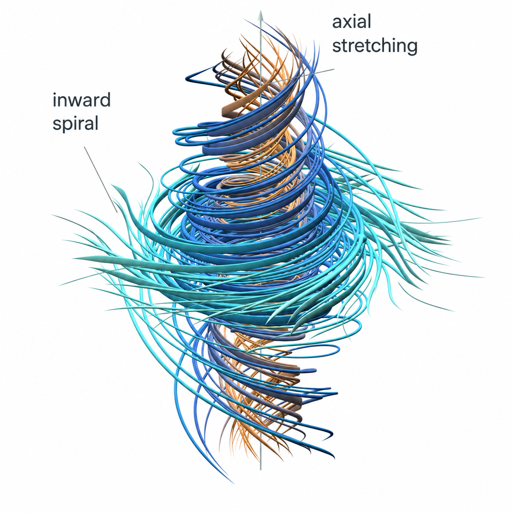
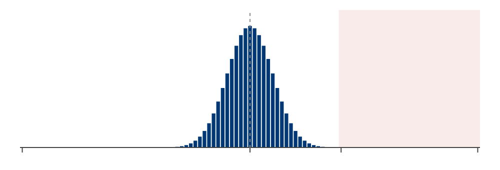
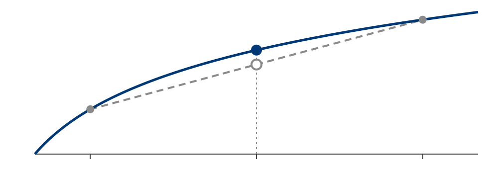

연세대학교 과학영재교육원 수료식 · 특별강연
AI가 수학 문제를 푸는 시대,
무엇이 진짜 실력일까?
노알버트 (Albert No) · 연세대학교 인공지능학과
과학영재교육원 수료 선배 · 2026. 11. 28.
01
AI 이후의 수학
AI는 이미 어디까지 왔을까?
IMO 2025 Gold Medal
35 / 42점
금메달 수준 · Google DeepMind의 Gemini Deep Think
국제수학올림피아드 공식 채점 기준
Luong & Lockhart, Google DeepMind blog post on Gemini Deep Think at IMO 2025 (gold-medal standard), 2025-07-21
Navier–Stokes: 밀레니엄 문제

OpenAI의 해법 발표
2026. 9. 8.
그림·발표: OpenAI, “On the Navier–Stokes Millennium Prize Problem,” 2026-09-08
문제를 푸는 것 vs 수학을 연구하는 것
정답 구하기
주어진 문제를 해결한다
수학을 연구하는 것
- 어떤 문제를 풀 것인가?
- 우리가 아는 것을 어떻게
더 효율적으로 표현할 것인가? - 무엇을 모르는가?
Tao의 관점 요약: Terence Tao, “Math 2.0,” Caltech 공개 강연, 2026-10-09, 슬라이드 p. 16 · 세 질문은 강연자의 정리
도구가 바꾸는 질문
계산기빠른 산술
→
컴퓨터대규모 계산 · 시뮬레이션
→
AI코딩 · 추론 · 탐색
도구가 좋아질수록 더 큰 질문에 도전할 수 있다
현실 문제를 풀려면 수학을 이해해야 한다
무엇을
만들고 싶은가?
만들고 싶은가?
→
어떤 수학 문제로
바꿀 수 있을까?
바꿀 수 있을까?
→
어떻게
구현할까?
구현할까?
예: AI가 쓴 글에 표식을 남기려면?
02
AI가 쓴 글에
보이지 않는 표식 남기기
LLM watermarking
AI가 썼다는 걸 알아야 할 때
?
독서 감상문 과제
“책을 읽고 자기 생각을 써 오세요.”
이 책을 읽으며 나는 친구의 의미를 다시 생각하게 되었다. 주인공이 끝까지 친구를 믿는 장면에서 …
학생이 쓴 글일까, AI가 쓴 글일까?
설명용 가상 예시
AI가 쓴 글에 표식을 남기고 싶다
눈에 보이는 표시
오늘 점심은 김밥을 먹었다. [AI 생성]
지우면 끝
티 나지 않는 표식
오늘 점심은 김밥을 먹었다.
겉보기엔 평범한 글
글을 만들 때, 눈에 띄지 않는 표식을 남길 수 있을까?
설명용 예문
눈에는 비슷해도, 숫자에는 흔적이 있다
원본
각 픽셀값을 최대 1만 바꿔 모두 홀수로
그런데 글의 단어도 이렇게 조금씩 바꿀 수 있을까?
원본: NASA Goddard Space Flight Center, Blue Marble 2002 (svs.gsfc.nasa.gov/30614) · 흑백 변환과 홀수화는 강연자 처리
ChatGPT 같은 LLM의 기본 원리
“오늘 점심은 ___”
설명용 예시
김밥을
40%
라면을
30%
국수를
20%
샐러드를
10%
문맥에 맞는 다음 단어의
확률분포를 예측한다
대량의 글에서 문맥과 단어의
통계적 패턴을 배운다
정답이 하나로 정해져 있지 않다
OpenAI Help Center, “How ChatGPT and our foundation models are developed” · 확률값은 설명용
초록 단어를 조금 더 자주
점선 막대 = 원래 확률 · 초록 = 실선, 빨강 = 빗금 · 설명용 예시
방식: Kirchenbauer et al., “A Watermark for Large Language Models,” ICML 2023 · 그림 양식 참고: dgMARK 프로젝트 페이지
초록만 고르지는 않는다
초록만 고르면 문장이 어색해질 수 있다. 그래서 조금 더 자주 고른다.
원래
초록 50%
빨강 50%
조금 더 자주
초록 60%
빨강 40%
초록만어색해질 수 있음
초록 100%
한 자리에서 후보 확률의 초록·빨강 합계 · 설명용 예시 (앞 슬라이드 값과 같음)
앞면 확률이 1/2인 동전을 100번 던져서
앞면이 70번 나올 수 있을까?

● 앞면 70
○ 뒷면 30
가능하지만, 매우 드물다

기대 50번 70번 이상 약 0.0039% 0 50 70 100공정하고 독립인 동전 100번 · 가로 = 앞면 횟수 · 막대 높이 = 확률
AI 작성글의 표식을 통계 문제로
AI 작성글에
표식을 넣자
표식을 넣자
→
수학문제화확률에 bias를 추가해
통계적 특성을 심는다
통계적 특성을 심는다
→
통계 문제초록 단어가 우연보다
얼마나 많은가?
얼마나 많은가?
글의 출처를 묻는 질문이 동전 던지기와 같은 문제가 되었다
Kirchenbauer et al., “A Watermark for Large Language Models,” ICML 2023
03
직관과 함께 커지는 가능성
이해한 수학으로 무엇을 더 할 수 있을까?
AI와 함께 더 많은 아이디어 시험하기
아이디어“10번 중 7번이라면?”
→
AI와 함께
구현 · 실험
구현 · 실험
→
결과를 보고
새 아이디어
새 아이디어
다시
AI도 아이디어를 낼 수 있다
오래 남은 것은 수학의 의미
공식 · 기법문제 풀이 훈련
→
말로 설명하기“이 식은 무슨 뜻?”
→
의미와 직관새로운 관점
문제 풀이 훈련도 도움이 됐지만,
저에게 진짜 중요했던 것은 직관이었습니다
저에게 진짜 중요했던 것은 직관이었습니다
평균 성장배율이 같아도,
들쭉날쭉하면 덜 성장한다
두 해의 성장배율 $a, b \gt 0$ · 산술평균 $m = \frac{a+b}{2}$은 같게
들쭉날쭉
$1$
$\times a$ →
$a$
$\times b$ →
$ab$
고르게
$1$
$\times m$ →
$m$
$\times m$ →
$m^2$
$$ab \;\le\; \left(\frac{a+b}{2}\right)^{2} \qquad \Longleftrightarrow \qquad \sqrt{ab} \;\le\; \frac{a+b}{2} \quad \text{(AM–GM)}$$
Jensen’s inequality: log는 concave

━ $y=\log x$ (concave) ╍ 두 점을 잇는 선분 $\log\dfrac{a+b}{2}$ $\frac{1}{2}\log a + \frac{1}{2}\log b$ $a$ $\dfrac{a+b}{2}$ $b$$$\log\frac{a+b}{2} \;\ge\; \frac{1}{2}\log a + \frac{1}{2}\log b \qquad (a, b \gt 0)$$
Boyd & Vandenberghe, Convex Optimization, 2004, §3.1.8–3.1.9 · 그림은 개형
수학을 직관으로 이해하고, 현실에 적용하기
수학을
직관으로 이해하기AM–GM = 성장 이야기
직관으로 이해하기AM–GM = 성장 이야기
→
그 직관을 현실 세계의
문제에 적용하기글의 표식 = 통계 문제
문제에 적용하기글의 표식 = 통계 문제
수료를 축하합니다
여러분의 다음 질문을 응원합니다
1 / 24